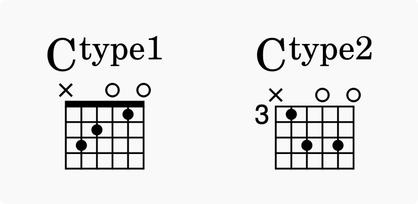
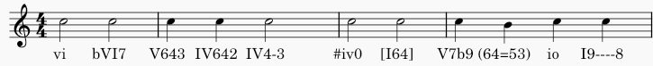
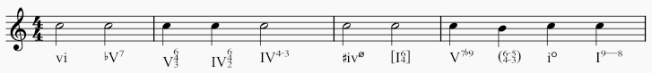
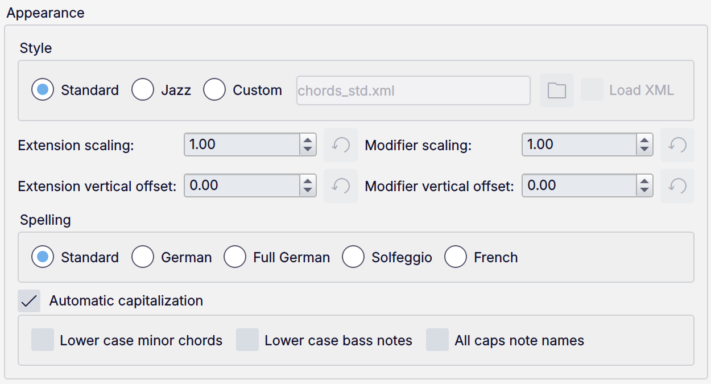
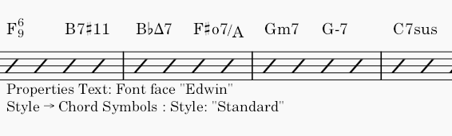
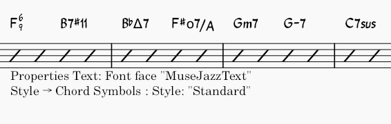
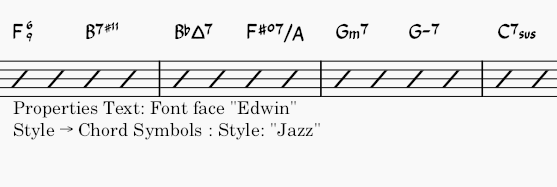
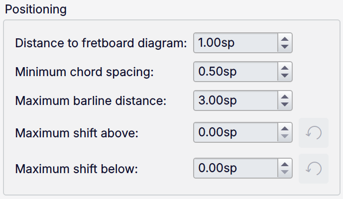
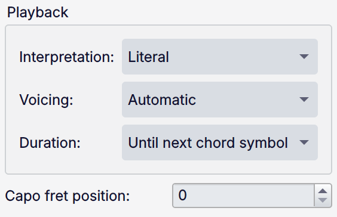
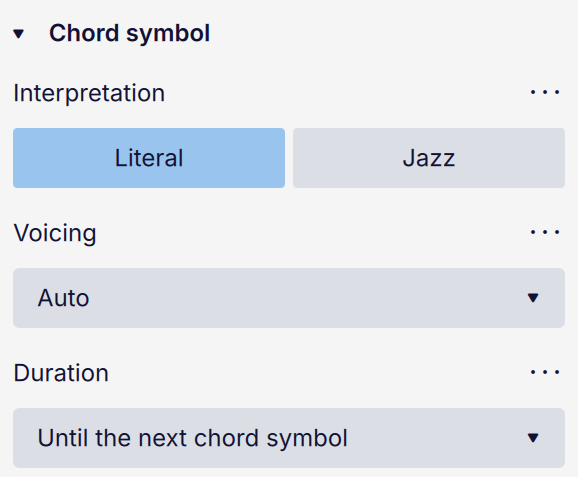

Chord symbols
Overview
A chord symbol is an abbreviated way of representing a musical chord and its harmony.
MuseScore Studio supports the following ways of representing chords:
- Chord symbols: alphabetical chord name plus chord quality. e.g. 'Am'.
- Roman numeral analysis (RNA): Roman numeral plus chord quality. e.g. 'vi'.
- Nashville number system (NNS): Arabic numeral plus chord quality. e.g. '6m'.
Chord symbols
MuseScore uses this terminology for the parts of a chord symbol:

- Root: The note that names the chord.
- Quality: Major, minor, diminished, half diminished, or augmented.
- Extensions & modifiers: Other alterations to the chord (7, sus, no 3, etc.).
Chord symbols are specified in plain text. As soon as you finish editing a chord (by moving to another chord, or by leaving edit mode), the characters are parsed and, as long as MuseScore Studio can understand the sequence, will be formatted correctly.
Entering chord symbols
- Select a note, note slash, or rest.
- Press
Ctrl+K(Mac:Cmd+K); the chord symbol entry cursor appears above the staff ready for input. - Type the chord symbol using this syntax:
* Root note: any letter
AtoG(case is not important). * Accidentals:#(sharp),b(flat),xor##(double sharp),bb(double flat). * For other symbols, extensions, and modifiers, see #chord-symbol-syntax. - To move the input cursor forward to the next beat, note, or rest (whichever comes first), press
Space. For other ways to move the cursor, see #navigation-commands. - To leave the input mode, press
Escor click on an empty place in the score.
A chord symbol must begin with a root note (any of the letters `a` to `g`), or an open parenthesis `(`.
When chord symbols are formatted, any root note typed in lower case will become capitalized (for alternative options, see Automatic capitalization) and any characters entered for accidentals are automatically converted into the appropriate music symbols. Do not directly input (or copy and paste) unicode characters such as U+266F (sharp sign, ♯), or U+266D (flat sign, ♭), as MuseScore will not render them correctly in chord notation.
Editing a chord symbol
Chord symbols are text items. Double-click on a chord symbol to enter edit mode. While editing, the chord symbol will be shown using text that follows the syntax described below. When you leave edit mode, it will again be converted to the correct formatting.
Chord symbol syntax
MuseScore understands most of the standard abbreviations used in chord symbols, and will play them back accordingly. They can be input as follows:
- Major:
M,Ma,Maj,ma,maj,t tproduces Δ; on Mac,ˆalso works- Minor:
m,mi,min,- - Diminished:
dim,o(renders as ° if using the Jazz style; as o, the Greek omicron, otherwise) - Half-diminished:
0(renders as ø if using the Jazz style; as 0 otherwise), or you can use abbreviations such asmi7b5etc. - To get Dø, type
D0, notDm70orDm0. - Augmented:
aug,+
The following syntax is also accepted:
- Extensions and modifiers: Examples include
7,b9,#5,sus,alt,add, andno3. - Inversions and slash chords: Type a slash (
/) before the altered bass note, for exampleC7/E. - Polychords (multiple chords stacked): type a pipe character (
|) between two chords, for exampleF|C. - Full playback of polychords is not yet supported. Only the first chord will be played.
You can further format chords using these methods:
- Parentheses, which can enclose any part of a chord symbol (or the whole thing)
- Commas
- To enter a space character within a chord symbol, use
Ctrl+Space(Mac:Alt+Space). - To enter an explicit natural after the root note, use the keyboard shortcut
Ctrl+Shift+H(Mac:Cmd+Shift+H). - When using an explicit natural, playback is reduced to just the chord's root note.
- Inputting
typefollowed by any characters at the end of a chord (for example,Ctype1orCtype2) adds superscript that can be used to denote different versions of the same chord. One way this might be used is to differentiate fretboard diagrams that otherwise have the same chord name.

'No chord' syntax
Type N.C. into a chord symbol to indicate that no chord should be played at that point in the score, stopping playback of any preceding chord symbols on that instrument.
This is the most common marking for specifying silence on the chord symbol track, but you can type any text that MuseScore does not recognize as a chord to achieve the same effect.
Chord symbols & fretboard diagrams
MuseScore Studio can automatically create guitar fretboard diagrams for most common chords symbols. See #adding-a-fretboard-diagram-to-your-score.
Roman numeral analysis
MuseScore Studio uses a specialist font (Campania) to provide the correct formatting for RNA. Unlike with chord symbols, when entering RNA using the syntax described below, the correct symbols and formatting will be shown with each keystroke.
Entering Roman numeral analysis
- Select a note, note slash, or rest
- From the menu, select Add -> Text -> Roman numeral analysis (if you use this feature often, you can assign a keyboard shortcut to do the same thing in Preferences)
- Type the RNA symbols for the chord just like normal text, as follows:
* major chord: upper case roman numerals (
I,II,III,IV, etc.) * minor chord: lower case roman numerals (i,ii,iii,iv, etc.) * diminished chord:o(lower case) * half-diminished chord:0* augmented chord:+* chord inversions: enter up to 3 single-digit numbers, top note first * accidentals:#(sharp),b(flat) orh(natural) - To move the input cursor, the commands are the same as for chord symbols: see Navigation commands
- To leave the input mode, press
Escor click on an empty place in the score.
While inputting, you can prevent any character from being interpreted by prefixing it with \ (backslash). This could be used, for example, to add the literal letters 'b' or 'h', or to input a non-superscripted number, etc.
Inversions can be indicated using the letters a, b, c, d by simply typing those letters.
For some more complex syntax, see the following examples.
Examples
Type this:

To produce this:

Inversion notation using vertically aligned Arabic numerals with accidentals such as 6#3 (i.e. an altered chord) is not supported. As a workaround: create [figured bass](%1) text instead, or create separate text objects and manually nudge them into position.
Nashville number system
The Nashville Number System (NNS), is a shorthand method of representing chords by their scale degrees rather than chord letters. This allows an accompaniment to be played in any key from the same chord chart.
Entering Nashville numbers
To start entering Nashville notation:
- Select a note, note slash, or rest
- From the menu, select Add -> Text -> Nashville number.
Just as with standard chord symbols, you can type Nashville notation normally and MuseScore will do its best to recognize and format the symbols appropriately.
The same navigation commands are used as for the other chord symbol types.

An example of the Nashville number system
Navigation commands
Use the following keyboard shortcuts to move the cursor in chord symbol entry mode:
| Action | Command (Windows) | Command (macOS) |
|---|---|---|
| Move cursor to next note, rest, or beat | Space |
Space |
| Move cursor to next beat | ; |
; |
| Move cursor to previous note, rest, or beat | Shift+Space |
Shift+Space |
| Move cursor to previous beat | : |
: |
| Move cursor to next measure | Ctrl+Right |
Cmd+Right |
| Move cursor to previous measure | Ctrl+Left |
Cmd+Left |
| Move cursor by duration number | Ctrl+1-9 |
Cmd+1-9 |
| Exit chord symbol entry | Esc |
Esc |
Chord symbol playback
Only **chord symbols** and **Nashville numbers** can be played back; **Roman numeral analysis** cannot.
To disable or re-enable playback of chord symbols entirely
- Click the cog button at the right end of the playback controls.
- In the menu, select Play chord symbols to toggle the setting off or on.
To disable or re-enable playback of a specific chord symbol
- Select the chord symbol.
- Go to the Properties panel.
- In the General selection, check or uncheck the Play box.
To toggle playback of chord symbols on a specific instrument
- Open the Mixer.
- Find the channel strip for the chords on that instrument (it will be named 'Chords.[Instrument name]').
- Toggle its Mute button on or off.
To change the sound that is used to play chord symbols
- Open the Mixer.
- Find the channel strip for the chords on that instrument (it will be named 'Chords.[Instrument name]').
- Select the dropdown arrow that appears when hovering over the sound name to choose a new sound.
Chord symbol style
The global style options for chord symbols are found in Format -> Style -> Chord symbols. Not every setting is applicable to every type of chord symbol notation. When not relevant, they will have no effect (for example, switching to Jazz style will affect chord symbols and NNS, but not RNA).
Each type of chord symbol notation has its own default text style, which can be configured in Format -> Style -> Text styles (Chord symbol, Roman numeral analysis, Nashville number).
Appearance

Style
This determines how chord symbols are rendered. It affects all chord symbols in the score and cannot be overridden for a specific item.
- Standard: the default, where chords are rendered using the standard text font, with no additional formatting
- Jazz: the MuseJazz font is used for a handwritten look, with distinctive superscript and other special characteristics
- Legacy MuseScore: used for scores created in versions of MuseScore Studio prior to 4.6
- Custom: with this option you can customize the appearance of chord symbols by means of a chord symbols style file (in XML format, with extension
.xml)
Creating and modifying chord symbols style files is a feature for advanced users, but it does offer a way to customize the parsing, formatting and interpretation of chord symbols that goes beyond the options available in the **Style** dialog.
The relevant files are normally to be found in the Styles folder of your installation (e.g. in Windows, by default, C:\Program Files\MuseScore 4\styles). Consult the comments in these files for an explanation of their syntax and functionality.
You can customize the scale for extensions and modifiers via Extension/Modifier scaling (as a proportion of the overall chord symbol size), and their vertical position via Extension/Modifier vertical offset (expressed in spaces).
Here are some example of how chords are rendered with different settings:



Spelling
These options affect chord symbols only (not Roman numeral analysis or Nashville numbers).
The following options are available under Spelling:
- Standard: A, B♭, B, C, C♯... (this is the default)
- German: A, B♭, H, C, C♯...
- Full German: A, B, H, C, Cis...
- Solfeggio: Do, Do♯, Re♭, Re...
- French: Do, Do♯, Ré♭, Ré...
If Automatic capitalization is on (which it is by default), MuseScore will capitalize all the root notes of chords, regardless of whether they are entered in upper or lower case. You can disable this behaviour entirely by unchecking the box, in which case the capitalization will be left as you type it, or you can customise its behaviour via the options below:
- Lower case minor chords: minor chords will be made lower-case (major chords will still be capitalized)
- Lower case bass notes: bass notes will be made lower-case
- All caps note names: all letters in note names, not just the initial letter, will be capitalized (e.g. DO, RE, MI)
Positioning

- Distance to fretboard diagram: the distance between a chord symbol and a fretboard diagram below it
- Minimum chord spacing: the minimum horizontal distance between two chord symbols
- Maximum barline distance: (this used to control the distance between the last chord symbol in a measure and the following barline, but is now obsolete)
- Maximum shift above/below: the maximum distance a chord symbol can be moved up or down to align it with the preceding one on the system. If these are set to 0, the symbols will not align; to force all chord systems to align across the system, set this to a high value.
Playback

These options affect chord symbols and Nashville numbers only (not Roman numeral analysis, which is not realised for playback).
They can be overridden for any specific chord symbol via the Properties panel.
- Interpretation
- Literal
- Jazz: Adds colour tones (e.g. the major 9th) but may also omit certain notes. This depends both on the chord itself and its context, like what chord follows it.
- Voicing
- Auto
- Root only: Just the bass note
- Close: Keeps the notes within the span of an octave
- Drop two: Lowers the second-highest note by one octave
- Six note
- Four note: 3rd, 5th, 7th and 9th intervals
- Three note
- Duration
- Until next chord symbol: Holds the chord until the next chord symbol appears.
- Until end of measure: Holds the chord until the end of the measure.
- Chord/rest duration: Holds the chord as long as the duration of the note or rest to which the chord symbol is attached.
These options also affect how chords will be realized into notation. See #generating-chord-voicings-onto-a-staff.
To voice a chord using notes only from the major triad (particularly when using the **Jazz** interpretation), use the triangle symbol (Δ) in the chord's name.
Capo fret position
This feature only applies to chord symbols, not Nashville numbers or Roman numeral analysis.
MuseScore can create an extra bracketed chord symbol next to the main one for when playing with a capo. The bracketed symbol, when played using a capo at that position, sounds identical to the unbracketed one.
To enable this feature, set Capo fret position to a value above 0.
Chord symbol properties

In the Properties panel, in the Chord symbol section, you can change the playback settings for the currently selected chord(s), which will override the score-wide settings.
In the Text section you can override properties for the text formatting of the symbol, as for all other text items.
The **Font** property is ignored when **Interpretation** is set to **Jazz**.
Transposition
(See also the Transposition chapter.)
Transposing instruments
When switching Concert pitch on or off, chord symbols on transposing instruments will adjust automatically. When concert pitch is off and chord symbols are copy-pasted between transposing and non-transposing instruments, they will be transposed accordingly. Note, however, that chords associated with fretboard diagrams are not transposed automatically.
The Transpose dialog
This feature only applies to chord symbols, not Nashville numbers or Roman numeral analysis.
Use the Transpose dialog (Tools -> Transpose) to transpose selected, standalone chord symbols. To prevent chord symbols from being transposed, uncheck the Transpose chord symbols box in the dialog.
Generating chord voicings onto a staff
MuseScore Studio allows you to generate notes from selected chord symbols and Nashville numbers (but not Roman numeral analysis) . The result will depend on the chord's playback properties.
To realise a selection of chord symbols:
- Make a selection of chord symbols
- Right-click on any chord in the selection
- Click Realise chord symbols
- In the Realise chord symbols dialog, if you wish to override the default options for the selection, check Override with custom options and configure the options below as necessary
- Click OK.
External links
To change chord quality after Generating chord voicings onto a staff, use a plugin such as:
- Chord Level Selector
- Next inversion: replaces all chord(s) in (keyboard) selection with their next inversion
To identify harmony or chord, use a plugin such as:
- Chord Identifier (Pop & Jazz) for music that features harmonic chromaticism heavily, as the RNA created has jazz influence.
- Chord ID and Roman numeral analysis for music that features stable tonality, as conventional RNA are created.
Chord symbols style files:
- chords.xml with sub/superscript and stacked chord alterations shared by RunasSudo
- github issue Support for chords with stacked extensions #16241 workaround by MarcSabatella